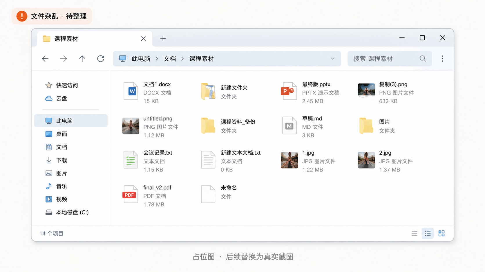
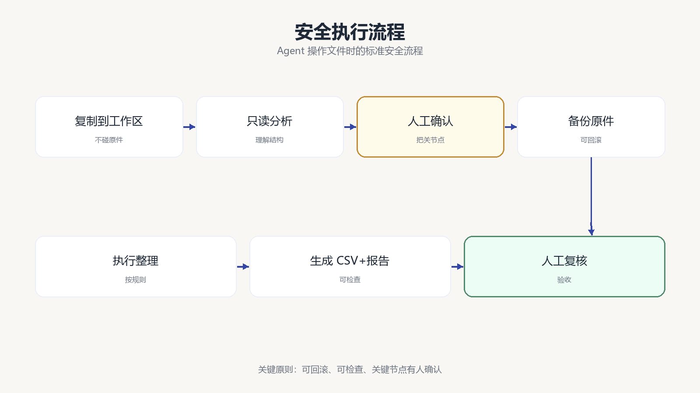
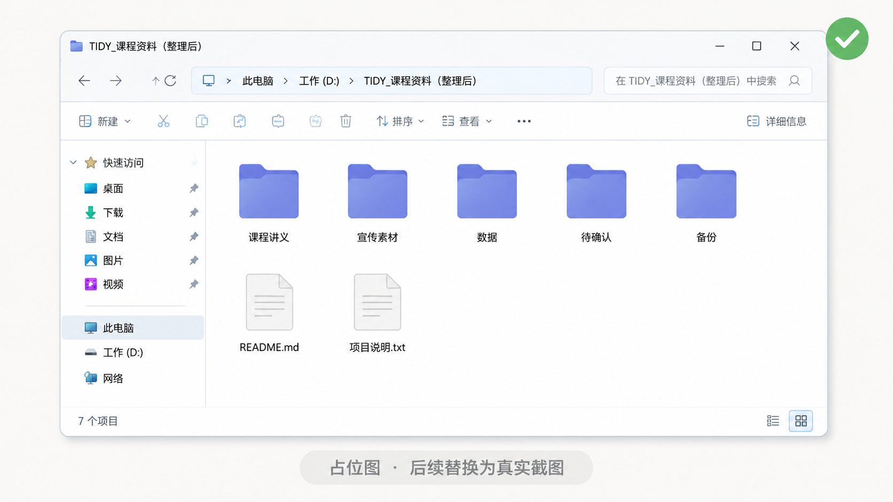

第 6 节
Agent 为什么能操作文件和软件
本节目标
让学生在一个真实案例中看见 Agent 的执行能力，也看见它的安全边界。
建议时长：14 分钟
前面几节我们已经讲清了概念，这一节开始，我们正式进入实操。很多同学对 Agent 最感兴趣的，不是它会不会解释概念，而是它为什么好像真的能“做事情”。比如读文件、改名字、分类整理、生成报告，甚至把结果保存下来。那我们就用一个最贴近真实办公场景的小任务来演示：整理一个混乱的课程素材文件夹。

这个文件夹里有文档、文本、数据表、图片，还有命名很模糊的文件。现实里，这样的情况太常见了。很多老师、培训助教、办公人员电脑里都有这种“看着就头大”的目录。我们不会让 Agent 直接上来就删除和覆盖，而是先走一条安全路径。
flowchart LR
A[复制到独立工作区] --> B[只读分析当前文件]
B --> C[提出分类与命名方案]
C --> D[人工确认]
D --> E[备份原件]
E --> F[执行整理]
F --> G[生成 CSV 和报告]
G --> H[人工复核]
这条流程看起来很“慢”，但它正好体现了一件重要的事：Agent 不是莽撞地替你乱动文件，而是应该在明确边界下工作。我们在正式演示时，会先把待整理文件复制到一个独立工作区，再要求 Agent 只读分析，先别动文件。它会列出文件数量、扩展名、可识别主题、可能重复的项目，以及建议怎样分类和命名。这个阶段的价值，是让学生看见 Agent 的“判断力”。
接下来，只有在人工确认之后，它才进入执行阶段。执行时还要先创建备份目录，确保原始文件都能找回；然后再按我们约定好的规则分类，比如放入“课程讲义”“宣传素材”“数据”“待确认”等目录，并生成一份 CSV 清单和整理报告。这样一来，整个过程就不是“神秘黑箱”，而是一条可检查、可追踪的执行链路。

屏幕演示建议
正式录制时，这一节建议尽量用真实文件夹来录。课程包里已经准备了待整理文件和一份标准输出，你可以先展示原始文件夹，再让 Agent 走“只读分析”命令，然后展示它给出的分类建议。确认之后，再切到执行阶段，最后对照标准输出展示整理后的目录结构、CSV 和报告。这样一节下来，学生会第一次真正感受到：Agent 的价值不是“会聊天”，而是“会执行”。
跟做口令
给学生的口令可以尽量自然一些。比如这样说：“请只读分析当前工作目录里的文件，不要移动、复制、删除或改名。先告诉我你看见了什么、你建议怎么分类、哪些地方有风险，然后等我确认。”确认后再说：“可以执行，但请先备份，再分类整理，最后给我一份清单和报告。”这种表达方式，本身就是一种非常实用的 Agent 沟通范式。
本节跟做
如果课堂条件允许，可以让学生在自己的一个小测试文件夹里试一次，不过一定要强调：不要直接拿重要资料做练习，必须使用副本。也可以直接使用课程包里的待整理文件做练习，再让学生对照标准输出进行检查。
本节小结
这一节最重要的认知是：Agent 能操作文件和软件，不是因为它神秘，而是因为它获得了授权、调用了工具，并沿着清晰流程去执行。 下一节我们把视野再打开一点，看不同身份的人究竟可以怎样把 Agent 用到自己的生活和工作里。